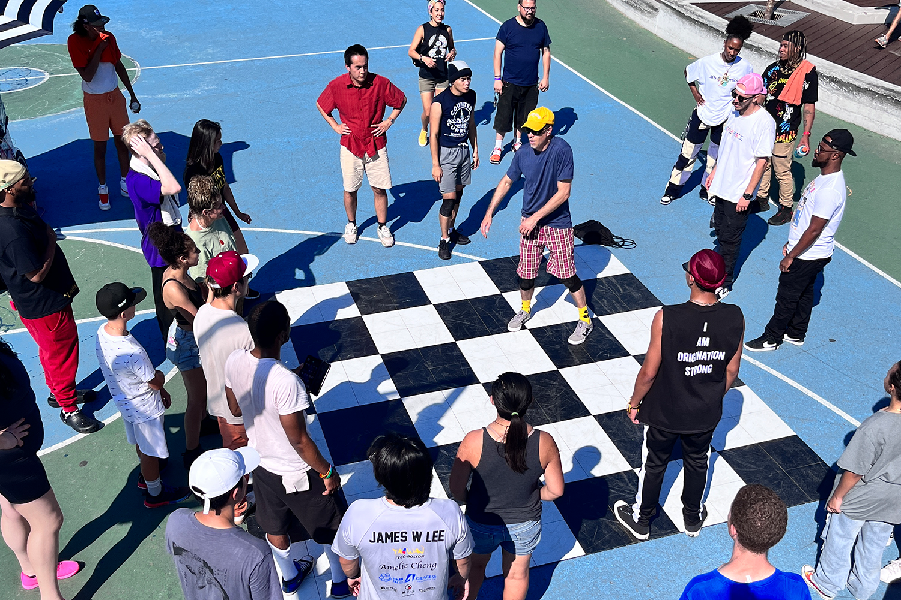

Nonprofit organizations, city government departments and private companies often hire A Trike Called Funk to provide a fun-filled and family-friendly entertainment experience at their events.
Before each activation, A.a.Ron Myers and Ed Word Galan roll out to set up at their target location, which is
typically an outdoor public place with limited infrastructure & amenities.
But no worries! A Trike Called Funk has its own portable battery that powers all of our equipment.
For announcements or remarks, we’ve got a mic that together with our speakers double as a PA system.
And our portable dance floor can be flexibly configured so we can get down anywhere around town.
But if dancing isn’t for you, you can create art on the sidewalk chalk...

play an instrument...
or paint your own canvas to take home! [TODO: image from Take it to the Paint series]
A Trike Called Funk's activations include multiple forms of expression, and often feature workshops, dance lessons and/or DJ sets by local artists.
MC & Dance Lead A.a.Ron kicks off each activation by introducing A Trike Called Funk and thanking the
event's sponsor.
DJ Ed Word then drops the beat and A.a.Ron starts to dance on and around the dance flor,
interacting with peopel and inviting them to get down.
Kids are usually the first to get out on the floor. A.a..Ron often engages them with dance-based games. And with a little encouragement, he also gets the grown-ups into the groove, too.
Along the way, A.a.Ron sends shouts outs to celebrate people’s creativity. And at times DJ Ed Word spins out from behind the turntables to co-lead with A.a.Ron easy-to-follow routines that get everyone dancing.
At first, people can be a bit hesitant to dance in front of others or with a group of strangers, but A Trike Called Funk's enthusiasm and dance prompts make it fun and easy to get down together.
Most of A Trike Called Funk's activations take place in public spaces that are accessible to everyone, including but not limited to Parks & Gardens...
Beaches & Islands...

Festivals, Fairs, and more!
This year, we're adding another Trike to our feel and will have increased capacity for a greater variety of activations that go beyond the arts to also include educational offerings.

But the main aim of A Trike Called Funk's activations remians the same: unleashing creativity,
connecting people and building community.
And now that you've gotten an inside look at our activations, we'd love to explore more collaboration.
Contact us at atrikecalledfunk@gmail.com so we can "Make it Funky" for you, too!